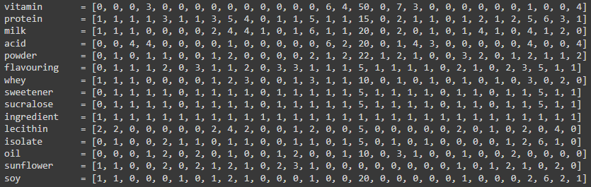

Crawling in My Protein: by Crawling In My Skin™
This is the page for the My Protein data retrieval project. The data is extracted entirely using Beautiful Soup, a Python framework for web scraping. The data is then converted into JSON files and displayed on this page. We have managed to retrieve various products, their price, ingredient description, calculate their authority and hub scores and the page ranks as well. Below you can see the results of our retrieval efforts.
Part 1: Building the crawler.
Query by ingredient
The first part of the project was to build a web crawler that would traverse the MyProtein "Protein" section and extract relevant information. This was done by going to https://www.myprotein.co.il/nutrition/protein.list and extracting 30 product anchors (a) for the link to the each product page. Every item has a description, name, price, ingredient list, etc.. We wanted to create a crawler which will return items based on an ingredient we would like it to have.
For example, if we would give the crawler the query "I want a product with milk sugar no whey no lecithin and papaya", it will be broken down to [milk, !whey, !lecithin] by using the function "filter_query()" which filters out the query based on the word our crawler recognizes (All of the words from the inverted index we have built by scraping the 30 items in that page).
The crawler will then go through the 30 items and check if the item has all the ingredients we want it to have. If it does, it will be added to the list of items that will be returned to the user.
Query by price range:
The original website allows filtering of the products only by pre-defined prices.
Our crawler allows the user to filter the products by a price range of their choice. The items are taken from two main pages: "Protein" and "Accessories". Test it in the block below.
Query by accessory type:
In this section, we wanted to perform a query search which includes the retrieval of gym accessories. The page links is https://www.myprotein.co.il/clothing/soft-accessories.list and the aim was to retrieve items labeled as "Hard accessories". Hard accessories are bottles, boxing gear, straps and more. Soft accessories are bags, socks, sport bras and more. Our goal was to filter out the hard accessories from the soft ones by that category.
We managed to put all of the items in this page by retrieving the data from MP and storing the items data in two JSON files, which are linked here: Accesories_JSON Protein_Products_JSON
Part 2: Calculating TF-IDF and returning relevant pages
As we already mentioned, the data retrieval process was done entirely by using Beautiful Soup. For ease of use, we did it in google colab. The link to the colab file can be found below:
Google ColabLet's dive into the code!
This code goes into every protein product page and extracts the ingredients.

After that, we define two functions, preprocess_text Removes stop words, deletes punctuations such as dots, and commas, tokenizes words, and converts words into their basic form. create_inverted_index() creates an inverted index from a long string of words. This inverted index is then used to create the queries a user can make.
Now, we find the 15 most common words from all item ingredients by first taking all of the ingredient strings, preprocessing them, and then inserting them into one big string to create an inverted index from them. We then get the 15 top words from the inverted index.
The inverted Index:
We then use inverted index to calculate tf_idf with the following functions.
The following text is the result of the TF_IDF calculations: 'vitamin': 1.66015273117091, 'protein': 0.1301845467101477, 'milk': 0.4879228193870323, 'acid': 1.1870448277518928, 'powder': 0.5336478845679888, 'flavouring': 0.21008467286988267, 'whey': 0.6244458112713444, 'sweetener': 0.199419071947844, 'sucralose': 0.199419071947844, 'ingredient': 0.0, 'lecithin': 0.9798866806379186, 'isolate': 0.6637654004650809, 'oil': 0.9675369173943055, 'sunflower': 0.7109509202358797, 'soy': 0.9450106896028247
Next, we define a function which finds the top most relevant documents based on the inverted index.
Finally, we create two example queries. These queries go through filtration to extract the relevant words to fit our dictionary.
Part 3: Authority scores, and Hub scores
Authority & Hub
Below is a Node class we created, each node will be used to construct a graph of connections, to calculate the scores. Each protein product has a recommended div with 4 links to other recommended protein products. We set the recommended products as pages the current product points to.
Node class:

Recommended products:
Now, without going into the complicated graph calculation and creation, each node holds the nodes that we connect to, and nodes that are connected to it.
And the authority and hub scores are as follows:
The scores are calculated by the function below:

Part 4: Page Ranks
The page rank score is calculated by the function below:
And the page rank scores are as follows:
As we can see, the score of all products converges after the 40th iteration.
Part 5: Feedback relevance
Part 6: Time complexity
Sub header
Example